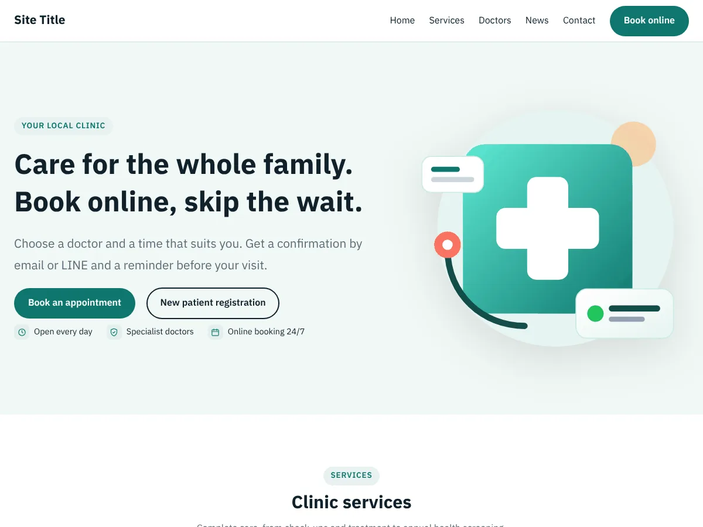
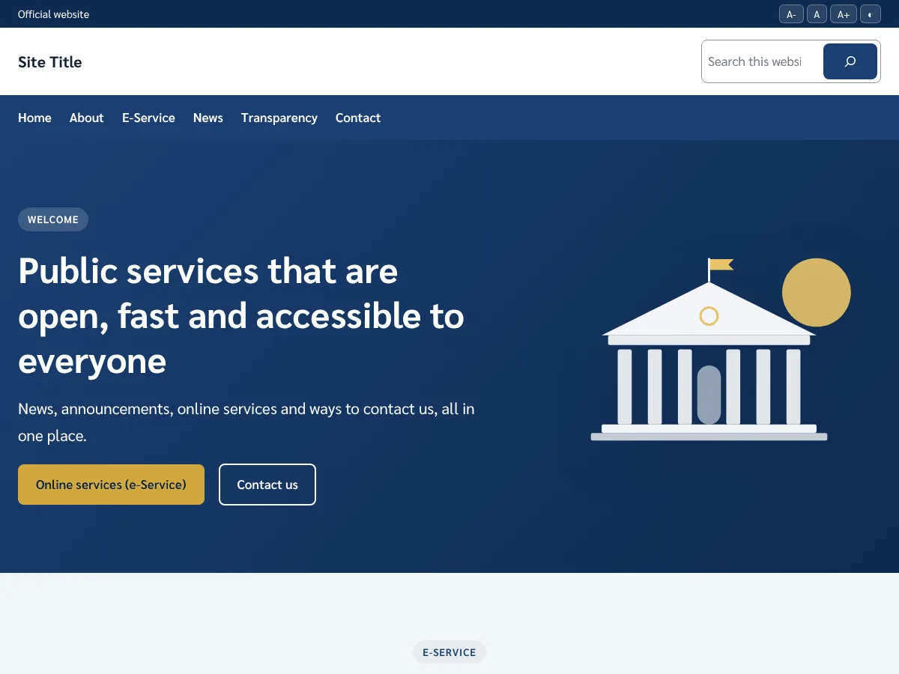

ธีม WordPress ฟรี สำหรับคลินิก หน่วยงานราชการ และร้านขายยา
ธีมแบบบล็อก (Full Site Editing) ทั้ง 3 ตัว แก้สี ฟอนต์ ส่วนหัว ส่วนท้าย และหน้าแรกได้เองที่ Appearance → Editor มีฟอนต์ภาษาไทยในตัว ข้อความในธีมเป็นภาษาอังกฤษพร้อมคำแปลไทย ใช้ได้โดยไม่ต้องติดตั้งปลั๊กอินเพิ่ม และไม่เก็บข้อมูลผู้ใช้
Three free block themes for clinics, public agencies and pharmacies. Thai fonts included, English text with a Thai translation, everything editable in the Site Editor. No plugins required, no data collected. Licensed under the GPL.
- ฟรี สัญญาอนุญาต GPLv2
- ภาษาไทย / English
- มีชุดสีให้เลือก
- ใช้งานบนมือถือได้ดี

Thai Clinic
คลินิกและโรงพยาบาลเอกชน
ปุ่มจองนัด · บริการ · ทีมแพทย์ · ขั้นตอนจองนัด · บทความสุขภาพ · ติดต่อ
รายละเอียด
Thai Public Agency
หน่วยงานราชการ โรงพยาบาลรัฐ อบต./เทศบาล
ปุ่มขยายตัวอักษร / สีตัดกัน · e-Service · ข่าว · ประกาศ · ITA / OIT
รายละเอียดThai Clinic รอตรวจบน WordPress.org
ธีมสำหรับคลินิกและโรงพยาบาลเอกชน
หน้าแรกสำเร็จรูป: ภาพหลักพร้อมปุ่มจองนัด บริการของคลินิก การ์ดทีมแพทย์ ขั้นตอนจองนัด 3 ขั้น ข่าวและบทความสุขภาพ แถบเชิญชวน และส่วนติดต่อพร้อมที่วางแผนที่ มีชุดสีหลัก สีทันตกรรม และสีสตรีและเด็ก ฟอนต์ IBM Plex Sans Thai
| เวอร์ชัน | 1.0.0 |
| ต้องการ | WordPress 6.6 ขึ้นไป · PHP 7.4 ขึ้นไป |
| สัญญาอนุญาต | GPLv2 หรือใหม่กว่า · ฟอนต์ SIL Open Font License 1.1 |
Thai Public Agency
ธีมสำหรับหน่วยงานราชการ โรงพยาบาลรัฐ และองค์กรปกครองส่วนท้องถิ่น
แถบบนมีปุ่มปรับขนาดตัวอักษรและโหมดสีตัดกันสูง หน้าแรกมีบริการออนไลน์ (e-Service) ข่าวประชาสัมพันธ์ ประกาศล่าสุดและผู้บริหาร การเปิดเผยข้อมูลสาธารณะ (ITA / OIT) และข้อมูลติดต่อ มีชุดสีน้ำเงิน เขียวสาธารณสุข และแดงเลือดหมู ฟอนต์ Sarabun
| เวอร์ชัน | 1.0.0 |
| ต้องการ | WordPress 6.6 ขึ้นไป · PHP 7.4 ขึ้นไป |
| สัญญาอนุญาต | GPLv2 หรือใหม่กว่า · ฟอนต์ SIL Open Font License 1.1 |
Thai Pharmacy
ธีมสำหรับร้านขายยา
แถบบนแสดงเวลาปรึกษาเภสัชกรและช่องทางติดต่อ หน้าแรกมีปุ่มแชต LINE และโทร หมวดสินค้า บริการของร้าน เภสัชกรและเวลาปฏิบัติงาน โปรโมชั่นและบทความ และส่วนติดต่อ มีชุดสีเขียว ฟ้า และส้ม ฟอนต์ Prompt และ Sarabun
| เวอร์ชัน | 1.0.0 |
| ต้องการ | WordPress 6.6 ขึ้นไป · PHP 7.4 ขึ้นไป |
| สัญญาอนุญาต | GPLv2 หรือใหม่กว่า · ฟอนต์ SIL Open Font License 1.1 |
วิธีติดตั้ง
- ดาวน์โหลดไฟล์ .zipเลือกธีมที่ต้องการแล้วกดดาวน์โหลด
- อัปโหลดธีมในหลังบ้าน WordPress ไปที่ Appearance → Themes → Add New Theme → Upload Theme แล้วกด Activate
- ปรับแต่งไปที่ Appearance → Editor เพื่อเปลี่ยนสี ฟอนต์ ส่วนหัว ส่วนท้าย และหน้าแรก